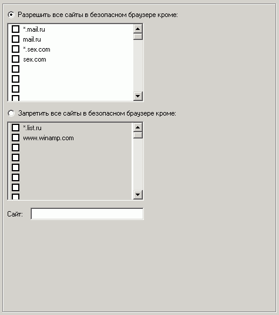

Здесь можно запретить все сайты кроме избранных, или же наоборот - разрешить все сайты кроме запрещенных. При указании сайтов рекомендуется использовать маски для поддоменов. Например, указывайте не только mail.ru, но еще и *.mail.ru
Иногда бывает полезным запускать браузер в режиме отказа от запретов на сайты.
В этом случае просто запустите его с параметром -r:
bodywb.exe -r